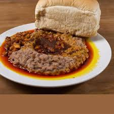

Bread and Beans Recipe
Bread and Beans
Ingredients:
- Buy your Agege Bread and Honey Beans
- Salt
- Onions
- Palm Oil or Groundnut Oil
- Pepper
- Water
Preparation Steps:
- After the selection of the Beans, boil some quantity of water in a pot
- let it cook on a high temperature
- slice some onions into the water
- after the water is hot, rinse your beans and pour inside and put Salt
- after the beans is done cooking pour pepper and palm oil
- After some minutes
- off your gas and serve your Beans
- Enjoy!
Preparation Steps
- After the selection of the Beans, boil some quantity of water in a pot
- let it cook on a high temperature
- slice some onions into the water
- after the water is hot, rinse your beans and pour inside and put Salt
- after the beans is done cooking pour pepper and palm oil
- After some minutes
- off your gas and serve your Beans
- Enjoy!
Photos of different kind of Bread and Beans
search more photos on google